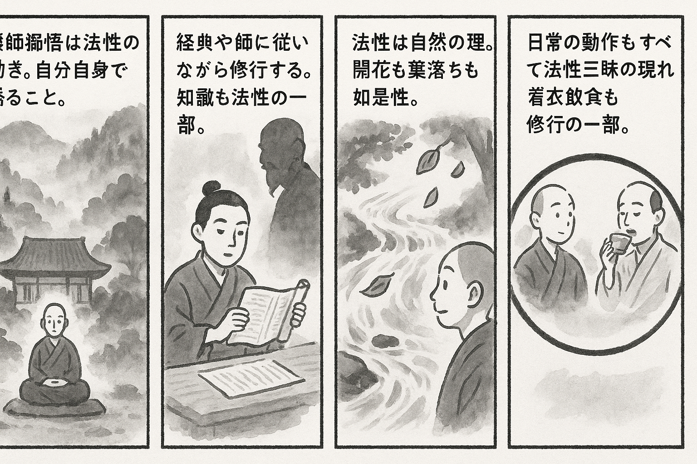

七十五巻 巻一覧
正法眼藏第48 法性
本ページの導入・語彙・深掘り・クイズは tools/regen_volume_intro_from_corpus.py が OpenAI API で生成したものです（入力は当巻冒頭原文の抜粋）。内容はモデル出力のため、重要箇所は必ず原文・教本と照合してください。
出典: https://shomonji.or.jp/zazen/doc/genzou.html
（ローカル生成の全文: 全文ページ）
この巻の位置（導入）
あるいは經卷にしたがひ、あるいは知識にしたがうて參學するに、無師獨悟するなり。無師獨悟は、法性の施爲なり。
たとひ生知なりとも、かならず尋師訪道すべし。たとひ無生知なりとも、かならず功夫辨道すべし。
語彙の足場
- 法性：仏教における真理や実相を指し、すべての存在が持つ根本的な性質。
- 無師獨悟：師を持たずに自己の悟りを得ること。
- 生知：生まれながらにして持つ知恵や理解。
- 功夫：修行や努力を通じて得られる知識や理解。
- 三昧：深い集中状態や瞑想の境地。
本文（冒頭・抜粋）
出典はリポジトリ内 doc/正法眼蔵.txt です。原文の参照元: https://shomonji.or.jp/zazen/doc/genzou.html
あるいは經卷にしたがひ、あるいは知識にしたがうて參學するに、無師獨悟するなり。無師獨悟は、法性の施爲なり。たとひ生知なりとも、かならず尋師訪道すべし。たとひ無生知なりとも、かならず功夫辨道すべし。いづれの箇箇か生知にあらざらん。佛果菩提にいたるまでも、經卷知識にしたがふなり。
しるべし、經卷知識にあうて法性三昧をうるを、法性三昧にあうて法性三昧をうる生知といふ。これ宿住智をうるなり、三明をうるなり。これ阿耨菩提を證するなり。生知にあうて生知を習學するなり。無師智自然智にあうて、無師智自然智を正傳するなり。もし生知にあらざれば、經卷知識にあふといへども、法性をきくことをえず、法性を證することをえざるなり。大道は、如人飮水、冷暖自知の道理にはあらざるなり。一切諸佛および一切菩薩、一切衆生は、みな生知のちからにて、一切法性の大道をあきらむるなり。經卷知識にしたがひて法性の大道をあきらむるを、みづから法性をあきらむるとす。經卷これ法性なり、自己なり。知識これ法性なり、自己なり。法性これ知識なり、法性これ自己なり。法性自己なるがゆゑに、外道魔儻の邪計せる自己にはあらざるなり。法性には外道魔儻なし。ただ喫粥來、喫飯來、點茶來のみなり。
しかあるに三二十年の久學と自稱するもの、法性の談を見聞するとき、茫然のなかに一生を蹉過す。飽叢林と自稱して、曲木の牀にのぼるもの、法性の聲をきき、法性の色をみるに、身心依正、よのつねに紛然の窟坑に昇降するのみなり。そのていたらくは、いま見聞する三界十方撲落してのち、さらに法性あらはるべし。かの法性は、いまの萬象森羅にあらずと邪計するなり。法性の道理、それかくのごとくなるべからず。この森羅萬象と法性と、はるかに同異の論を超越せり。離卽の談を超越せり。過現當來にあらず。斷常にあらず。色受想行識にあらざるゆゑに法性なり。
洪州江西馬祖大寂禪師云、一切衆生、從無量劫來、不出法性三昧。長在法性三昧中、著衣喫飯、言談祗對。六根運用、一切施爲、盡是法性（一切衆生、無量劫よりこのかた、法性三昧を出でず。長く法性三昧中に在つて、著衣喫飯、言談祗對す。六根の運用、一切の施爲、盡く是れ法性なり）。
馬祖道の法性は、法性道法性なり。馬祖と同參す、法性と同參なり。すでに聞著あり、なんぞ道著なからん。法性騎馬祖なり。人喫飯、飯喫人なり。法性よりこのかた、かつて法性三昧をいでず。法性よりのち、法性をいでず。法性よりさき、法性をいでず。法性とならびに無量劫は、これ法性三昧なり。法性を無量劫といふ。
しかあれば、卽今の遮裏は法性なり。法性は卽今の遮裡なり。著衣喫飯は、法性三昧の著衣喫飯なり。衣法性現成なり、飯法性現成なり。喫法性現成なり、著法性現成なり。もし著衣喫飯せず、言談祗對せず、六根運用せず、一切施爲せざるは、法性三昧にあらず。不入法性なり。
卽今の道現成は、諸佛相授して釋迦牟尼佛にいたり、諸祖正傳して馬祖にいたれり。佛佛祖祖、正傳授手して法性三昧に正傳せり。佛佛祖祖、不入にして法性を活鱍鱍ならしむ。文字の法師たとひ法性の言ありとも、馬祖道の法性にはあらず。不出法性の衆生、さらに法性にあらざらんと擬するちから、たとひ得處ありとも、あらたにこれ法性の三四枚なり。法性にあらざらんと言談祗對、運用施爲する、これ法性なるべきなり。
無量劫の日月は、法性の經歴なり。現在未來もまたかくのごとし。身心の量を身心の量として、法性にとほしと思量するこの思量、これ法性なり。身心量を身心量とせずして、法性にあらずと思量するこの思量、これ法性なり。思量不思量、ともに法性なり。性といひぬれば、水も流通すべからず、樹も榮枯なかるべしと學するは外道なり。
釋迦牟尼佛道、如是相、如是性。
しかあれば、開花葉落、これ如是性なり。しかあるに、愚人おもはくは、法性界には開花葉落あるべからず。しばらく他人に疑問すべからず、なんぢが疑著を道著に依模すべし。他人の説著のごとく擧して、三復參究すべし。さきより脱出あらん向來の思量、それ邪思量なるにあらず、ただあきらめざるときの思量なり。あきらめんとき、この思量をして失せしむるにあらず。開花葉落、おのれづから開花葉落なり。法性に開花葉落あるべからずと思量せらるる思量、これ法性なり。依模脱落しきたれる思量なり。このゆゑに如法性の思量なり。思量法性の渾思量、かくのごとくの面目なり。
馬祖道の盡是法性、まことに八九成の道なりといへども、馬祖いまだ道取せざるところおほし。いはゆる一切法性不出法性といはず、一切法性盡是法性といはず、一切衆生不出衆生といはず、一切衆生法性之少分といはず、一切衆生一切衆生之少分といはず、一切法性是衆生之五分といはず、半箇衆生半箇法性といはず、無衆生是法性といはず、法性不是衆生といはず、法性脱出法性といはず、衆生脱落衆生といはず、ただ衆生は法性三昧をいでずとのみきこゆ。法性は衆生三昧をいづべからずといはず、法性三昧の衆生三昧に出入する道著なし。いはんや法性の成佛きこえず、衆生證法性きこえず、法性證法性きこえず、無情不出法性の道なし。
しばらく馬祖にとふべし、なにをよんでか衆生とする。もし法性よんで衆生とせば、是什麼物恁麼來なり。もし衆生をよんで衆生とせば、説似一物卽不中なり。速道速道。
正法眼藏法性第四十八
于時寛元元年癸卯孟冬在越吉峰古精舍示衆
図解（4コマ・AI生成）
教義の根拠は本文・出典に従い、漫画は比喩の補助に留めてください。

深掘り（読解の手掛かり）
- 法性は一切の存在に共通する根本的な性質であり、すべての衆生がこれを理解することが求められる。
- 無師獨悟は重要な概念であるが、尋師訪道や功夫辨道も同様に重要である。
- 法性の理解は、経典や知識に依存することなく、自己の内面から得られるものである。
確認（形成評価）
各設問の下の「採点」で正誤を表示します（ブラウザ内のみ。ログは送りません）。